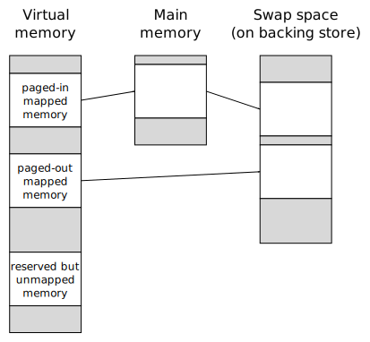
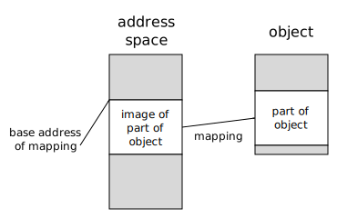

Memory Management Glossary: M¶
A | B | C | D | E | F | G | H | I | J | K | L | M | N | O | P | Q | R | S | T | U | V | W | X | Y | Z
- machine word
See
word.
- main memory
Also known as
memory, primary storage.
The main memory (or primary storage) of a computer is memory(1) that is wired directly to the processor, consisting of RAM and possibly ROM.
These terms are used in contrast to mass storage devices and cache memory (although we may note that when a program accesses main memory, it is often actually interacting with a cache).
Main memory is the middle level of the memory hierarchy: it is slower and cheaper than caches(1), but faster and more expensive than backing store.
It is common to refer only to the main memory of a computer; for example, “This server has 128 GB of memory” and “OS X 10.8 requires at least 2 GB of memory”.
Similar terms
- malloc
A function in the standard C library that performs dynamic allocation of memory(2).
Many people use “malloc” as a verb to mean “allocate dynamically”.
Similar term
Opposite term
- manual memory management
In some systems or languages, it is up to the application program to manage all the bookkeeping details of allocating memory(2) from the heap and freeing it when no longer required; this is known as manual memory management.
Manual memory management may be appropriate for small programs, but it does not scale well in general, nor does it encourage modular or object-oriented programming.
To quote Joyner (1996):
In C++ the programmer must manually manage storage due to the lack of garbage collection. This is the most difficult bookkeeping task C++ programmers face, that leads to two opposite problems: firstly, an object can be deallocated prematurely, while valid references still exist (dangling pointers); secondly, dead objects might not be deallocated, leading to memory filling up with dead objects (memory leaks). Attempts to correct either problem can lead to overcompensation and the opposite problem occurring. A correct system is a fine balance.Historical note
Manual memory management was common in early languages, but garbage collection has been around since the late 1950s, in languages like Lisp. Most modern languages use automatic memory management, and some older languages have conservative garbage collection extensions.
Opposite term
In the MPS
Manual memory management can be used with pools such as MVFF (Manual Variable First Fit) via the functions mps_alloc() and mps_free().
- mapped
Also known as
committed.
A range of virtual addresses is said to be mapped (committed on Windows) if there is physical memory(2) associated with the range.
Note that, in some circumstances, the virtual memory system could actually overcommit mapped memory.
Opposite term
See also
In the MPS
The term committed is used. The function mps_arena_committed() returns the total committed memory for an arena.
- mapping
A mapping is a correspondence between a range of virtual addresses and some memory(1) (or a memory-mapped object). The physical location of the memory will be managed by the virtual memory system.
Each page in a mapping could be paged out or paged in, and the locations it occupies in main memory and/or swap space might change over time.
The virtual address space can contain of a complex set of mappings. Typically, parts of the address space are mapped (have a mapping assigned), others are reserved but unmapped, and most of it is entirely unmapped.
Virtual memory with different kinds of mappings.
See also
- mark-compact
Mark-compact collection is a kind of tracing garbage collection that operates by marking reachable objects, then compacting the marked objects (which must include all the live objects).
The mark phase follows reference chains to mark all reachable objects; the compaction phase typically performs a number of sequential passes over memory(2) to move objects and update references. As a result of compaction, all the marked objects are moved into a single contiguous block of memory (or a small number of such blocks); the memory left unused after compaction is recycled.
Mark-compact collection can be regarded as a variation of mark-sweep collection, with extra effort spent to eliminate the resulting fragmentation. Compaction also allows the use of more efficient allocation mechanisms, by making large free blocks available.
- mark-sweep
mark-and-sweep Mark-sweep collection is a kind of tracing garbage collection that operates by marking reachable objects, then sweeping over memory(2) and recycling objects that are unmarked (which must be unreachable), putting them on a free list.
The mark phase follows reference chains to mark all reachable objects; the sweep phase performs a sequential (address-order) pass over memory to recycle all unmarked objects. A mark-sweep collector(1) doesn’t move objects.
Historical note
This was the first garbage collection algorithm, devised by John McCarthy for Lisp.
See also
- marking
Marking is the first phase (“the mark phase”) of the mark-sweep algorithm or mark-compact algorithm. It follows all references from a set of roots to mark all the reachable objects.
Marking follows reference chains and makes some sort of mark for each object it reaches.
Marking is often achieved by setting a bit in the object, though any conservative representation of a predicate on the memory location of the object can be used. In particular, storing the mark bit within the object can lead to poor locality of reference.
- MB
See
- megabyte
Also known as
MB.
A megabyte is 1024 kilobytes, or 1048576 byte(1).
See byte(1) for general information on this and related quantities.
- memoization
See
- memory(1)
Also known as
storage, store.
memory or storage (or store) is where data and instructions are stored. For example, caches(1), main memory, floppy and hard disks are all storage devices.
These terms are also used for the capacity of a system to store data, and may be applied to the sum total of all the storage devices attached to a computer.
Historical note
“Store” is old-fashioned, but survives in expressions such as “backing store”.
- memory(2)
Memory refers to memory(1) that can be accessed by the processor directly (using memory addressing instructions).
This could be real memory(1) or virtual memory.
- memory(3)
See
- memory(4)
- A memory location; for example, “My digital watch has 256 memories.”
- memory bandwidth
Memory bandwidth (by analogy with the term bandwidth from communication theory) is a measure of how quickly information (expressed in terms of bits) can be transferred between two places in a computer system.
Often the term is applied to a measure of how quickly the processor can obtain information from the main memory (for example, “My new bus design has a bandwidth of over 400 Megabytes per second”).
- memory cache
See
- memory hierarchy
See
- memory leak
Also known as
leak, space leak, space-leak.
A memory leak is where allocated memory(2) is not freed(1) although it is never used again.
In manual memory management, this usually occurs because objects become unreachable without being freed(1).
In tracing garbage collection, this happens when objects are reachable but not live.
In reference counting, this happens when objects are referenced but not live. (Such objects may or may not be reachable.)
Repeated memory leaks cause the memory usage of a process to grow without bound.
- memory location
Also known as
location.
Each separately-addressable unit of memory(2) in which data can be stored is called a memory location. Usually, these hold a byte(2), but the term can refer to words.
- memory management
Also known as
storage management.
Memory management is the art and the process of coordinating and controlling the use of memory(1) in a computer system.
Memory management can be divided into three areas:
- Memory management hardware (MMUs, RAM, etc.);
- Operating system memory management (virtual memory, protection);
- Application memory management (allocation, deallocation, garbage collection).
Memory management hardware consists of the electronic devices and associated circuitry that store the state of a computer. These devices include RAM, MMUs (memory management units), cache(1), disks, and processor registers. The design of memory hardware is critical to the performance of modern computer systems. In fact, memory bandwidth is perhaps the main limiting factor on system performance.
Operating system memory management is concerned with using the memory management hardware to manage the resources of the storage hierarchy and allocating them to the various activities running on a computer. The most significant part of this on many systems is virtual memory, which creates the illusion that every process has more memory than is actually available. OS memory management is also concerned with memory protection and security, which help to maintain the integrity of the operating system against accidental damage or deliberate attack. It also protects user programs from errors in other programs.
Application memory management involves obtaining memory(2) from the operating system, and managing its use by an application program. Application programs have dynamically changing storage requirements. The application memory manager must cope with this while minimizing the total CPU overhead, interactive pause times, and the total memory used.
While the operating system may create the illusion of nearly infinite memory, it is a complex task to manage application memory so that the application can run most efficiently. Ideally, these problems should be solved by tried and tested tools, tuned to a specific application.
The Memory Management Reference is mostly concerned with application memory management.
- Memory Management Unit
See
MMU.
- memory manager
The memory manager is that part of the system that manages memory(2), servicing allocation requests, and recycling memory, either manually or automatically.
The memory manager can have a significant effect on the efficiency of the program; it is not unusual for a program to spend 20% of its time managing memory.
Similar terms
See also
- memory mapping
Also known as
file mapping.
Memory mapping is the technique of making a part of the address space appear to contain an “object”, such as a file or device, so that ordinary memory(2) accesses act on that object.
The object is said to be mapped to that range of addresses. (The term “object” does not mean a program object. It comes from Unix terminology on the mmap man page.)
An address space with a range mapped to part of an object.
Memory mapping uses the same mechanism as virtual memory to “trap” accesses to parts of the address space, so that data from the file or device can be paged in (and other parts paged out) before the access is completed.
Historical note
File mapping is available on most modern Unix and Windows systems. However, it has a much longer history. In Multics, it was the primary way of accessing files.
See also
- memory protection
See
- message
In the MPS
A data structure which the MPS uses to communicate with the client program. See Messages.
- message queue
In the MPS
A queue of messages posted by an arena. It can be queried by calling mps_message_poll(), mps_message_queue_type(), or mps_message_get(). See Messages.
- message type
In the MPS
A value of type mps_message_type_t describing the type of a message. There are three message types: mps_message_type_finalization(), mps_message_type_gc(), and mps_message_type_gc_start(). See Messages.
- misaligned
See
- miss
A miss is a lookup failure in any form of cache(3), most commonly at some level of a storage hierarchy, such as a cache(1) or virtual memory system.
The cost of a miss in a virtual memory system is considerable: it may be five orders of magnitude more costly than a hit. In some systems, such as multi-process operating systems, other work may be done while a miss is serviced.
Opposite term
hit.
See also
- miss rate
At any level of a storage hierarchy, the miss rate is the proportion of accesses which miss.
Because misses are very costly, each level is designed to minimize the miss rate. For instance, in caches(1), miss rates of about 0.01 may be acceptable, whereas in virtual memory systems, acceptable miss rates are much lower (say 0.00005). If a system has a miss rate which is too high, it will spend most of its time servicing the misses, and is said to thrash.
Miss rates may also be given as a number of misses per unit time, or per instruction.
Opposite term
- mmap
- mmap is a system call provided on many Unix systems to create a mapping for a range of virtual addresses.
- MMU
Also known as
Memory Management Unit.
The MMU (Memory Management Unit) is a hardware device responsible for handling memory(2) accesses requested by the main processor.
This typically involves translation of virtual addresses to physical addresses, cache(1) control, bus arbitration, memory protection, and the generation of various exceptions. Not all processors have an MMU.
See also
- mostly-copying garbage collection
A type of semi-conservative tracing garbage collection which permits objects to move if no ambiguous references point to them.
The techniques used are a hybrid of copying garbage collection and mark-sweep.
Mostly-copying garbage collectors share many of the benefits of copying collectors, including compaction. Since they support ambiguous references they are additionally suitable for use with uncooperative compilers, and may be an efficient choice for multi-threaded systems.
- mostly-exact garbage collection
- mostly-precise garbage collection
- moving garbage collector
moving memory manager A memory manager (often a garbage collector) is said to be moving if allocated objects can move during their lifetimes.
Relevance to memory management
In the garbage collecting world this will apply to copying collectors and to mark-compact collectors. It may also refer to replicating collectors.
Similar term
Opposite term
- mutable
Any object which may be changed by a program is mutable.
Opposite term
- mutator
Also known as
client program.
In a garbage-collected system, the part that executes the user code, which allocates objects and modifies, or mutates, them.
For purposes of describing incremental garbage collection, the system is divided into the mutator and the collector(2). These can be separate threads of computation, or interleaved within the same thread.
The user code issues allocation requests, but the allocator code is usually considered part of the collector. Indeed, one of the major ways of scheduling the other work of the collector is to perform a little of it at every allocation.
While the mutator mutates, it implicitly frees memory(1) by overwriting references.
Historical note
This term is due to Dijkstra et al. (1976).
Opposite term
In the MPS
The MPS documentation uses the term client program to refer to the mutator.

Previous topic
Next topic
Downloads
MPS Kit release 1.111.0
All MPS Kit releases
Issues
Known issues
Issues fixed in release 1.111.0